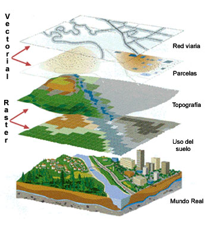

Sistemas de Información Geográfica. Definición
Un sistema de información geográfica (también conocido con los acrónimos SIG en español o GIS en inglés) es un conjunto de herramientas que integra y relaciona diversos componentes (usuarios, hardware, software, procesos) que permiten la organización, almacenamiento, manipulación, análisis y modelización de grandes cantidades de datos procedentes del mundo real que están vinculados a una referencia espacial, facilitando la incorporación de aspectos sociales-culturales, económicos y ambientales que conducen a la toma de decisiones de una manera más eficaz. En el sentido más estricto, es cualquier sistema de información capaz de integrar, almacenar, editar, analizar, compartir y mostrar la información geográficamente referenciada. En un sentido más genérico, los SIG son herramientas que permiten a los usuarios crear consultas interactivas, analizar la información espacial, editar datos, mapas y presentar los resultados de todas estas operaciones. La tecnología de los SIG puede ser utilizada para investigaciones científicas, la gestión de los recursos, la gestión de activos, la arqueología, la evaluación del impacto ambiental, la planificación urbana, la cartografía, la sociología, la geografía histórica, el marketing, la logística por nombrar unos pocos. Por ejemplo, un SIG podría permitir a los grupos de emergencia calcular fácilmente los tiempos de respuesta en caso de un desastre natural, o encontrar los humedales que necesitan protección contra la contaminación, o pueden ser utilizados por una empresa para ubicar un nuevo negocio y aprovechar las ventajas de una zona de mercado con escasa competencia.
